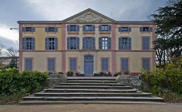
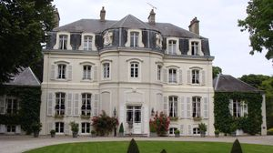
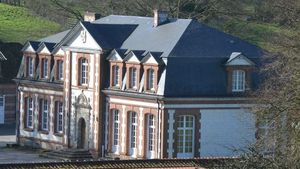

Recensement Jean-Claude Truffet
| Département | 62 — Pas-de-Calais |
| Canton | Auxi-le-Château |
| Commune | Grigny -Hesdin |
| Type d'édifice | Châteaux |
| Période d'origine | XVI-XVII |
| Coordonnées GPS | 50° 23" 08" Nord, 2° 04' 02" Est Royon GPS : 50° 28' 19" Nord, 1° 59' 22" Est |



Trois châteaux dans cet article Grigny, Brevillers, et Royon. GRIGNY Au XVIe siècle, la seigneurie de Grigny (lès-Hesdin) appartenait à Antoine de Bassecourt, écuyer, reçu les bourgeois d'Arras, le 17/01/1583, dont le grand-père, Pierre Bassecourt, avait été anobli par le roi Philippe II en septembre 1579. Jean-Baptiste de Bassecourt, arrière-petit-fils d'Antoine, fut nommé marquis de Grigny par lettres patentes du roi d'Espagne Charles II du 22-17/07/1690, avant de faire reconnaître ce titre en France, en Octobre 1705 (lettres patentes enregistrées le 22/10/1706 à Fontainebleau en y incorporant les Terres de Fresnoy, Quisy et Marconnelle). Jean-Baptiste de Bassecourt fut nommé, en 1690, chevalier de l'ordre de Saint-Jacques, seigneur d'Huby, de Grigny, général des armées d'Espagne, issu d'une ancienne famille de l'Artois, au service depuis 1655. L'érection intervient en récompense de ses services comme lieutenant-général des armées et commandant général de la cavalerie aux Pays-Bas. La terre de Grigny relevant du château d'Hesdin a tous droits de justice (justice seigneuriale), ancien château, manoir seigneurial, plusieurs beaux fiefs et domaines, dépendances, cens, ventes, redevances, fermes, moulins, bois, prés et autres droits utiles et honorifiques. N'ayant pas d'héritier, Jean-Baptiste de Bassecourt donne cette terre par acte passé à Naples le 17 novembre 1702 à Antoinette Philippe de Bassecourt, sa sur mariée à Louis de Salperwick, pour en jouir après sa mort et la laisser ensuite à François de Salperwick, son fils et neveu de Jean-Baptiste de Bassecourt. La Famille de Salperwick a ensuite conservé le fief jusqu'à la Révolution.
BREVILLERS A l'opposé d'hesdin e château a été bâti par l'un des membres de la famille de l'abbé Prévost en 1776. Il a été réalisé en brique et en pierre. Des chaînages harpés esquissent sur la façade regardant vers la cour deux pavillons latéraux de deux travées chacun; un effet identique a été recherché au niveau de la toiture. Au centre s'ouvrent deux portes cintrées celle de droite donne accès au vestibule ; elles encadrent deux fenêtres, mais elles s'en trouvent séparées par un large panneau de pierre se détachant sur la brique, de même les allèges des baies que délimitent le prolongement des encadrements de celles-ci et le cordon séparant le rez-de-chaussée de l'étage sont meublées par un rectangle de pierre, toutes ces parties en pierre réalisent un effet de quinconce très heureux. Six lucarnes s'ouvrent à la base de la toiture en croupe. La façade postérieure reprend dans l'ensemble ces dispositions, mais elle ne présente qu'une seule porte et le versant de la toiture est dépourvu de lucarnes ROYON, le château de Royon initial était de style Louis XV, avant d'être détruit, pendant la dernière guerre, il fut reconstruit en 1960, est occupé par les Hauteclocque dont le Maire de Royon. Le parc est appelé le Parc du château des Barons de Hautecloque. il est privé.
Famille de Jean-Baptiste de Bassecourt"
Quatre châteaux dans cet article Grigny grav-1, Brevillers grav-2, et Royon grav-3. Grigny GPS : 50° 23" 08" Nord, 2° 04' 02" Est Royon GPS : 50° 28' 19" Nord, 1° 59' 22" Est